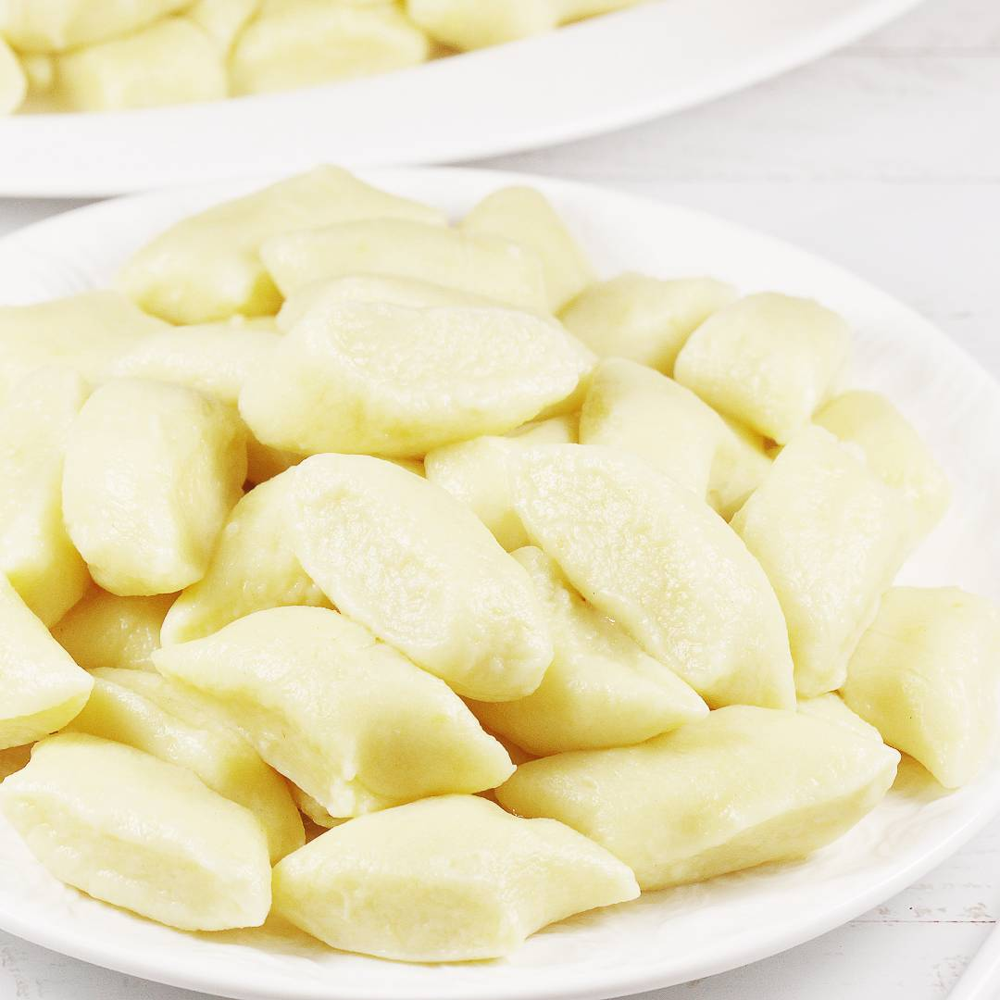

Kopytka

Description
Discover my best traditional potato dumplings, known as 'kopytka.' These are probably the most commonly cooked dumplings and a fantastic idea for a simple dinner. I usually serve these incredibly delicious kopytka with sauce and meat or with breadcrumbs.
Ingredients
- 1 kg boiled potatoes
- 9 heaping tablespoons of cake flour - about 230 g
- 1 medium or small egg
- 1 level teaspoon of salt
Steps
- To make kopytka, you need one kilogram of boiled potatoes. It's best to mash the boiled potatoes while they're slightly warm. If you're grinding them, warm potatoes are easier to work with. If using a grinder, you can also use leftover potatoes from the previous day's meal, even if they're cold.
- If you're starting from scratch, use around 1400 grams of unpeeled potatoes. Boil them in salted water until soft. It's important to thoroughly dry the potatoes after boiling. After draining, you can leave the pot with just the potatoes on low heat for a minute to evaporate excess water. Place the smoothly ground potatoes in a wide bowl.
- Sprinkle nine heaping tablespoons of cake flour onto a floured surface, around 230 grams. Place the smooth potato mixture on it. Crack in one small or medium egg. Add a level teaspoon of salt. The potato mixture can still be slightly warm.
- Knead until smooth and free of lumps. The mixture should be very pliable. The color of the dough depends on the type of potatoes used. They can be quite pale or slightly yellow.
Tip: Remember, potatoes vary. Some have more starch than others. You might need a bit more flour, but don't add too much, as it can make the dumplings tough.
- Boil a large pot of water with a pinch of salt. Place 1/4 of the kopytka dough on a floured surface and roll into a rope about 2 cm thick. Cut neat pieces about 1.5-2 cm long.
- From the given proportions, the dough is soft and delicate, so feel free to dust your hands with flour.
- Sprinkle some flour over the kopytka, then place them in boiling water. Gently stir them right away. Once they float, wait about 90 seconds, then retrieve them with a slotted spoon. Drain excess water and place them on a plate.
- I served the kopytka from the photos hot with pork and vegetables. I adapted a Hungarian goulash recipe, omitting mushrooms, adding more fresh and sweet paprika. I used chicken broth and thickened the sauce with a bit of potato starch. It turned out delicious!